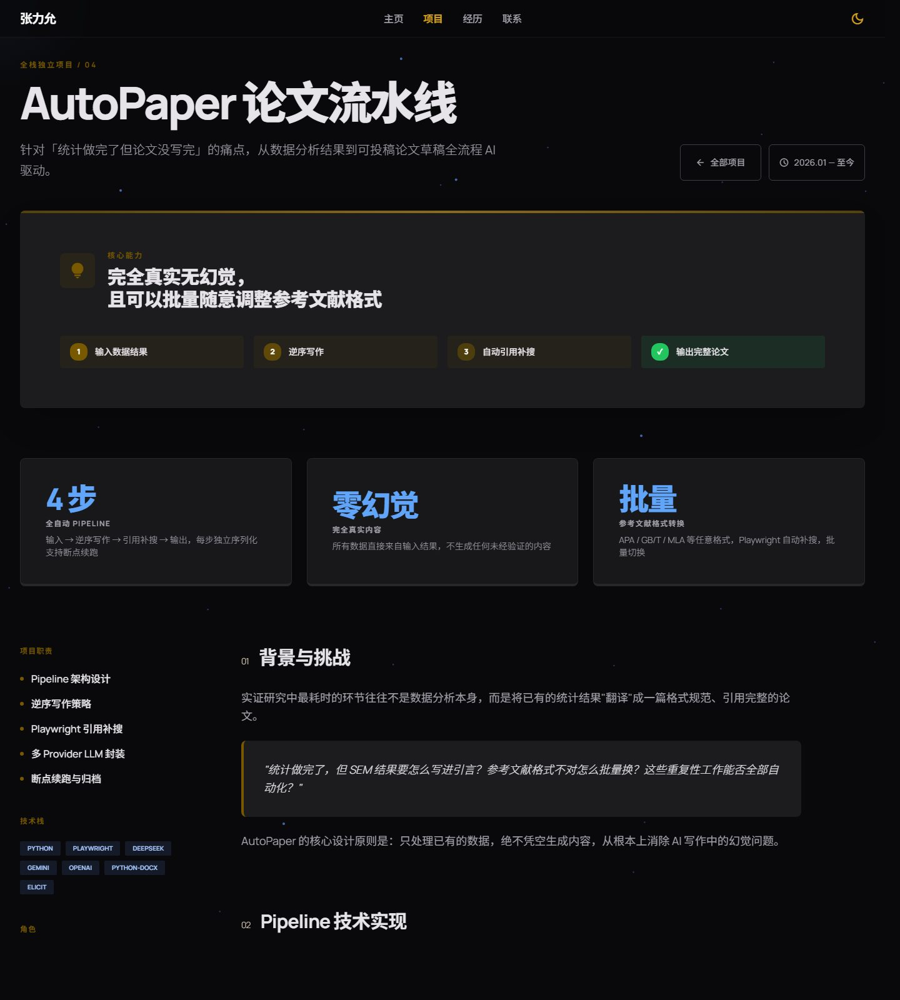
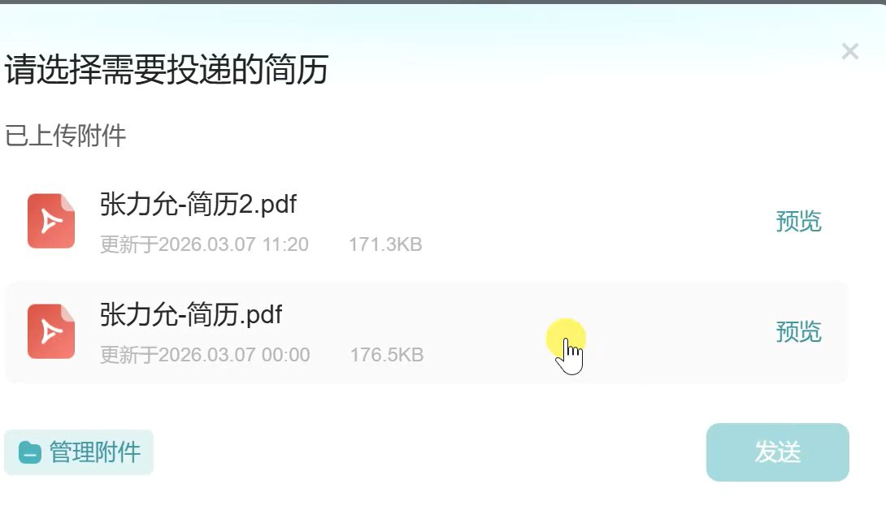

Auto-Paper 论文生成平台
面向科研写作的多节点产品化流水线：预检 → 文献检索 → 多模型生成 → 装配 → Word 交付；Next.js + Prisma + Python Pipeline 全链路独立交付，真实用户可使用。
- fast / standard / high 三档策略 + 异步 Worker + 断点恢复，fast 档 30 分钟内交付可核对引用的 Word。
- Playwright 浏览器自动化负责文献检索，多 LLM Provider + 对象存储 + Webhook 形成完整交付链路。
- 已服务 50+ 用户，40+ 人用于课程作业草稿，辅助产出论文获 MSCE 2026 录用。

AI 实证研究平台
将量表检索、理论配置与模型试算产品化为线上工作台，聚合 700+ 量表与 100+ 理论，FastAPI + Next.js + Prisma 全栈交付。
- JWT + FREE/PRO 订阅分级，Prisma Migrate 管理生产库演进，零停机迁移。
- 上线后 50+ 注册用户、20+ 付费转化（¥39.9 首惠包），真实付费数据验证。
Agent Studio · AI 游戏工作台
以「自然语言 → 可玩游戏原型」为落地场景，跑通多智能体编排、多模型能力路由、视觉自检闭环、长期记忆与可续跑任务运行时的端到端 Agent 运行时。
- 8 个异构 Agent（Designer / Coder / Validator / Visual Inspector / Reflector 等）按 DAG 编排 + 视觉自检回路。
- Intent → Capability → Model 路由，指数退避 + Fallback，单模型故障不拖垮全链路。
- SSE + Checkpoint 持久化任务运行时，刷新 / 重启后可从最近阶段续跑。
多 Agent 实验平台
面向教学实验独立交付多智能体对话平台：6 个 Agent 角色、21 轮自由对话、WebSocket token 级流式输出与 HITL 工作流中断恢复，已在高校课堂累计服务 60+ 用户。
AMJ 离线学术专家 U 盘
面向管理学硕博与青年教师的 100% 离线学术助手：顶刊论文切块入 Chroma 四分库 + bge-small-zh，QLoRA 微调 Qwen3.5-9B 合并导出 GGUF，Ollama + Open WebUI 绿色版打包 U 盘即插即用。
- 16 篇 AMJ 文献、346+ chunk，4 子库检索；186 条 Alpaca 训练，7.5h QLoRA。
- 严格按「维度打分 → 核心缺陷 → 修改方案 → 录用概率」输出，杜绝讨好型回答。
BOSS 求职自动化 Agent
事件监听 + 本地桥接 + Prompt 注入 + 浏览器自动化：智能投递、多轮 IM 自动回复；冷却、去重、日上限、策略降级、队列化任务与频控，长时稳定运行，单日可打满 Boss 直聘简历额度。

Arich · CH582M 蓝牙 IoT Demo
基于 CH582M 固件与 UniApp 完成 BLE 扫描 / 连接 / notify 与 App 状态联动；MounRiver 编译烧录，熟悉 CH58x 外设驱动与移动端蓝牙（GATT / 特征值）。
个人兴趣向 IoT Demo，侧重打通「嵌入式固件 ↔ 移动端」端到端链路，编码与联调大量借助 Cursor、Claude Code 等 AI 工具辅助。